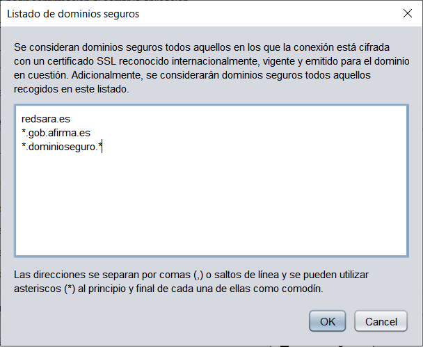

En ocasiones, Java no reconoce algunos dominios como seguros al conectar con Autofirma a un servicio externo a través de un canal SSL. Esta función permite configurar en Autofirma una lista de dominios que serán reconocidos como seguros y evitar esta problemática.
Estos dominios, se podrán añadir en el cuadro de texto que se muestra en la siguiente imagen, separador por comas o saltos de línea. Tambien se permite indicar con un asterisco como comodín en el principio o final del dominio que se indique.

La configuración establecida se aplicará al pulsar sobre el botón OK. Si se pulsa el botón Cancelar, se cerrará la ventana sin aplicar la configuración.